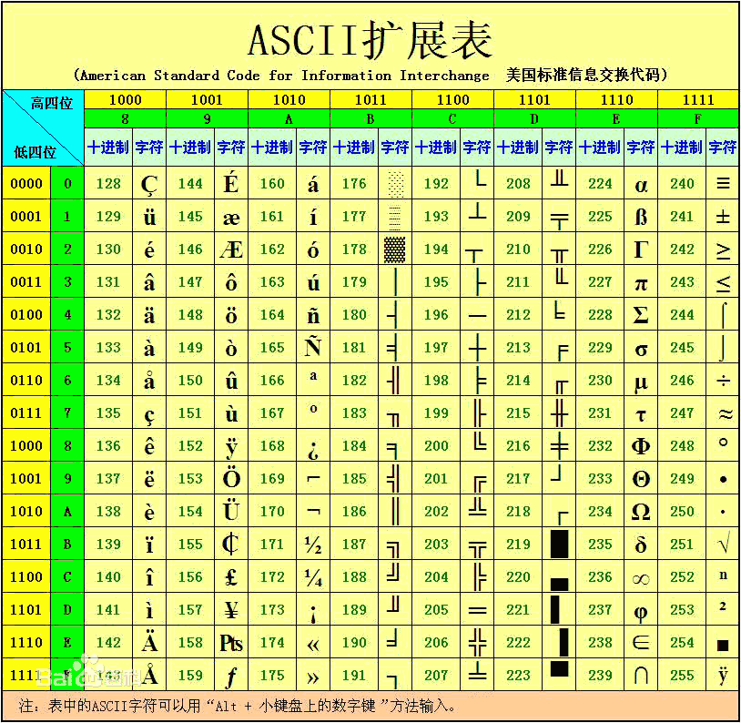

alert
📌 题目信息
- 题目名： alert
💥 解题过程
- 狂点确定把弹窗点没，F12 打开开发者工具，展开所有代码。
- 发现一行看起来很奇怪的代码。
- 与舍友讨论，猜测可能是 ASCII 码。
- 解码后成功获得 flag。
🎁 获得奖励
1 金币 10分
📝 收获
这道题的考点
ASCII 十进制编码的识别 + 排除弹窗干扰。
原理：为什么这串数字就是 flag
- ASCII 用数字给字符编号：
102是f、108是l、97是a……所以102 108 97 103拼起来就是flag。 - 网页里的
alert()弹窗只是干扰——让你心烦意乱、点个不停，没时间看源码。 - 把弹窗处理掉、静下来看代码，数字串就藏在那里。
下面是 ASCII 对照表，做题时可以直接对照（可打印字符在 32~126 之间）：

可复用的思路（下次遇到同类题）
- 先处理干扰：按
ESC关弹窗，或勾选"阻止此页面创建更多对话框"，或直接禁用 JavaScript。 - F12 → Elements，找可疑的数字串（连续的数字、用空格/逗号分隔）。
- 判断是不是 ASCII：每个数字都落在 32~126 这个可打印区间，且个数和 flag 长度吻合。
- 解码：Python 一行
print("".join(chr(int(x)) for x in s.split()))，或用 CyberChef 的 "From Decimal"。
延伸知识
- 常见的"字符 → 数字/符号"编码：ASCII（十进制 102、十六进制 66）、Hex、Base64、URL 编码（
%66）、HTML 实体（f）。 - 看到
f这种&#开头的就知道是 HTML 实体编码，浏览器渲染时会自动变成f。 - CyberChef 的 Magic 功能可以自动猜编码，但初学阶段建议先自己判断特征，再对照工具结果。
防御视角
与安全机制无关——这题考的是基本功。但"弹窗干扰"这种思路在真实钓鱼页面里也存在（用弹窗掩盖真实操作），所以养成"先排除干扰再分析"的习惯是有价值的。
踩坑提示
- 狂点弹窗很浪费时间——ESC 或禁用 JS 一行搞定。
- 确认是十进制还是十六进制再解码，别解出一堆乱码还以为思路错了。